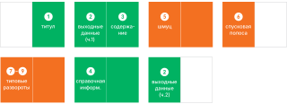
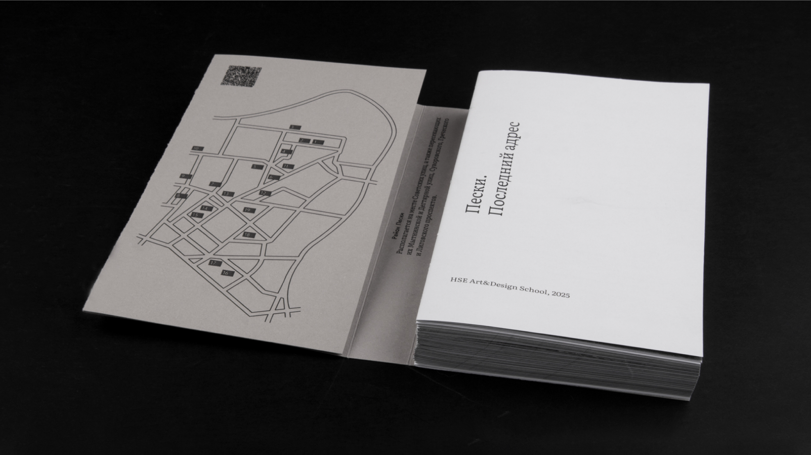
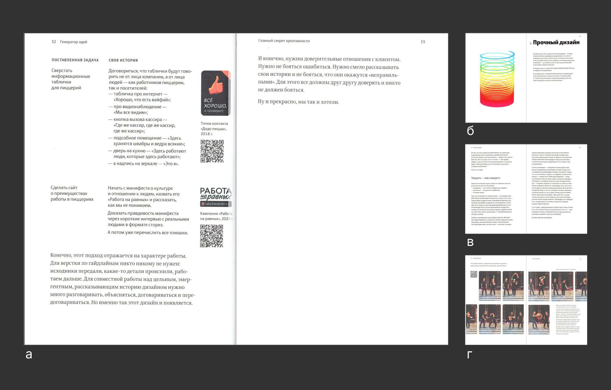

Разделы книги
Книги делятся на типажи по разным целям: одна создается, чтобы показать серию фотографий в выгодном свете, другая — дать новые знания. Одна книга должна быть понятна ребёнку, другая — прочитана солидным искушённым взрослым. Книги получатся совершенно разными не только по дизайну, а еще и по типичным для издания разворотам. Несмотря на это, подавляющее большинство будет содержать одинаковые страницы и схожую структуру. В этой главе мы охватим все многообразие видов полос, которое включает в себя типичная книга. Из этого объема ты сможешь выбрать, какие развороты нужны в твоей книге и, соответственно, получить цельное представление о ее содержании.
Все страницы делятся на две группы: основной контент, ради которого написана книга, и служебные полосы. Чуть ниже находится инфографика, иллюстрирующая раскадровку условного многостраничного издания, где цветом отмечены эти группы.2 Далее в главе будет написано, какая информация обычно располагается на каждой странице, и чем нам интересны конкретно эти полосы. Для наглядности каждой странице в инфографике присвоен номер, и под этим же номером расположено ее описание в тексте. А под этим абзацем приведены в пример реальные развороты развороты из книги «Сложный дизайнер».1

←
1
Типы разворотов в книге "Сложный дизайнер"

←
2
Самые популярные типы разворотов в книгах
Служебные страницы
Это не те развороты, ради которых создается книга. При создании наброска мы в первую очередь будем думать о других страницах, где будет располагаться основной контент.
① Титульный лист.3 В книге «Сложный дизайнер», которую мы рассматриваем в качестве примера, титул находится на 3‑ей полосе книжного блока. Первые две страницы пустые, так как к ним у корешка приклеивается форзац (обычно на первой странице располагают небольшие графические элементы или пожелания, либо ее оставляют пустой). Вернемся к титульному листу. На этой странице содержится:
- Название + дескриптор
- Автор
- Город
- Издательство
- Год печати тиража

←
3
Титульный лист
② Концевая страница (или, другими словами, выходные данные). Это паспорт книги, где содержатся исчерпывающие данные, которые позволяют хранить, продавать издание. В рассматриваемом нами издании концевая страница разбита на две части: одна полоса4 находится на 4‑й полосе книги, а вторая5 в самом конце, на 192‑й. На первой из них находятся сведения, которые являются наиболее важными для производства коммерческой книги:
- УКД — универсальная десятичная классификация. Благодаря ней систематизируют все печатные издания мира.
- ББК — библиотечно-библиографическая классификация. Российская классификация, которую используют в наших библиотечных фондах для организации и хранения.
- Номер ISBN — это международный книжный номер, уникальный для каждой книги в мире. Это обязательный элемент сведений о книге. Без него невозможна продажа и размещение издания в официальных книжных магазинах и библиотеках.
- Каталожная карточка — это все, что находится на рис. 55 начиная от фамилии автора и заканчивая кратким описанием книги. Книжная карточка на человеческом языке помогает идентифицировать книгу и дает полное понимание о ней, ее объеме и печати.

←
4
Оборот титула

←
5
Концевой титул
На рисунке5 расположилась вторая часть выходных данных. На нем написано, где был отпечатан тираж, в какой студии был сделан дизайн, перечисляются переводчики, дизайнеры, иллюстраторы и все, кто приложил руку к созданию книги, а также повторяется информация с титульного листа. Обычно люди не смотрят туда при общении с книгой, но дизайнеры могут найти здесь контакты типографии, печатавшей книгу. Иногда там пишут шрифты и тип бумаги, которые использовались для создания книги. Такая страница чаще всего печатается на последнем листе, который соединён с форзацем. Существует четкая структура оформления концевой страницы.
③ Содержание. Обычно идет либо после титульного листа, либо после входных данных, как в нашем примере. Но есть масса других нестандартных решений.6

←
6
Необычный вариант оформления содержания на обложке

④ Справочные материалы. В подавляющем большинстве случаев они находятся в конце книги. Они могут быть разбиты по несколким разделам, каждый из которых оформлен как своеобразная отдельная глава. В одной книге могуть соседствовать: библиография (список источников), указатель художников, глоссарий, рекомендации к посещению / прочтению и т. д.
Типовые развороты (контент)
На этих разворотах происходит основное повествование из текста и картинок. На них мы фокусируемся в первую очередь во время создания набросков и макета, а потом распространяем решение на всю книгу.
Типовые развороты — это шаблоны, имитирующие типичные для данного издания страницы, которые повторяются не один раз на протяжении книги. На них располагают материал в разных пропорциях, и такой способ помогает учесть все случаи расположения материала и разработать подходящий макет. В типовые развороты можно включить следующие полосы:
5. Шмуцтитул
6. Спусковая полоса (это начало главы)
7.
Разворот с картинками
8. Разворот с текстом
9.
Комбинации картинок и текста в разных пропорциях
⑤ Шмуцтитул и спусковая полоса. Эти полосы создаются настолько заметными, чтобы при быстром перелистывании глаз замечал, где начинается новая глава и раздел. Начало раздела выделяется шмуцтитулом — это яркие страницы на 1–2 полосы. Раздел, в свою очередь, может делиться на главы. ⑥ спусковая полоса обозначает начало новой главы и представляет собой нестандартное для верстки смещение текста и/или картинок. Верстка этой страницы должна выделяться среди обычных разворотов (номера 7–9).
Те самые типовые развороты. У книги в разных частях по стечению обстоятельств могут появиться следующие страницы: развороты, где есть ⑦ только картинки, ⑧ только текст, или ⑨ текст с картинками в разном соотношении. Дизайнер старается набросать такой макет, такую систему, где все эти развороты смотрятся хорошо.

←
7
Типовые развороты
a. Текст и фото
б. Шмуцтитул
в. Только текст
г. Только фото
Мастер-пейджи. В InDesign есть шаблоны страниц, которые называются master pages. Рассмотрим, как можно их использовать в плане обсужденной темы.8 Один шаблон — для обычных страниц. На нем будут располагаться нумерация страниц и колонтитул. Если применить этот шаблон к обычной пустой станице, на ней появится ее номер, который рассчитается автоматически, исходя из ее расположения в макете. Второй master page — для шмуцтитулов. На нем не будет колонтитулов и колонцифры. Часто шмуцтитулы оформляются как цветной лист. Расположим на каждой страничке цветную заливку. Теперь можно назначать страницам второй master page, и страницы будут иметь заливку.

←
8
Верхняя часть панели «Pages», где находятся Мастер-пейджи
В этой главе мы обсудили, из каких страниц состоит книга. Если тебе все еще сложно понять, какие хочется взять в книгу, через несколько страниц в главе «Анализ» мы определимся с этим вопросом окончательно. В следующей главе мы опустимся на уровень ниже, более детальный — рассмотрим, какие типажи элементов располагаются на книжном развороте, и какие у них свойства.